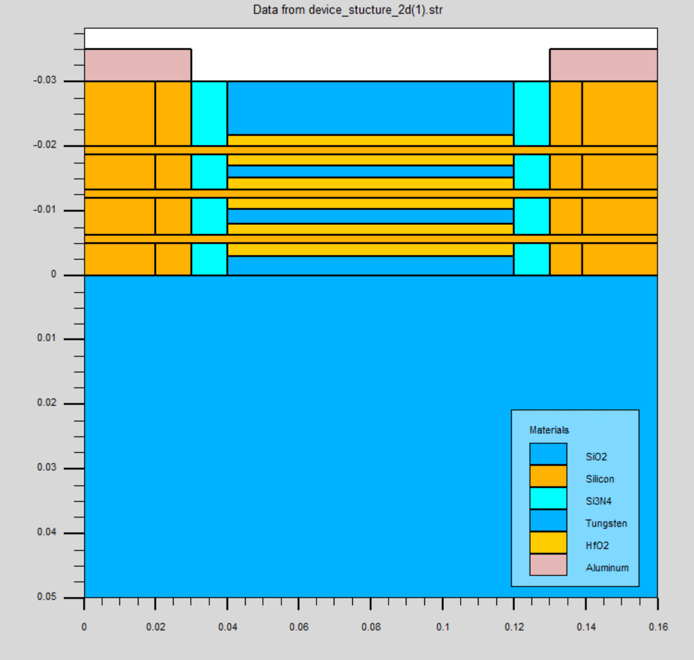
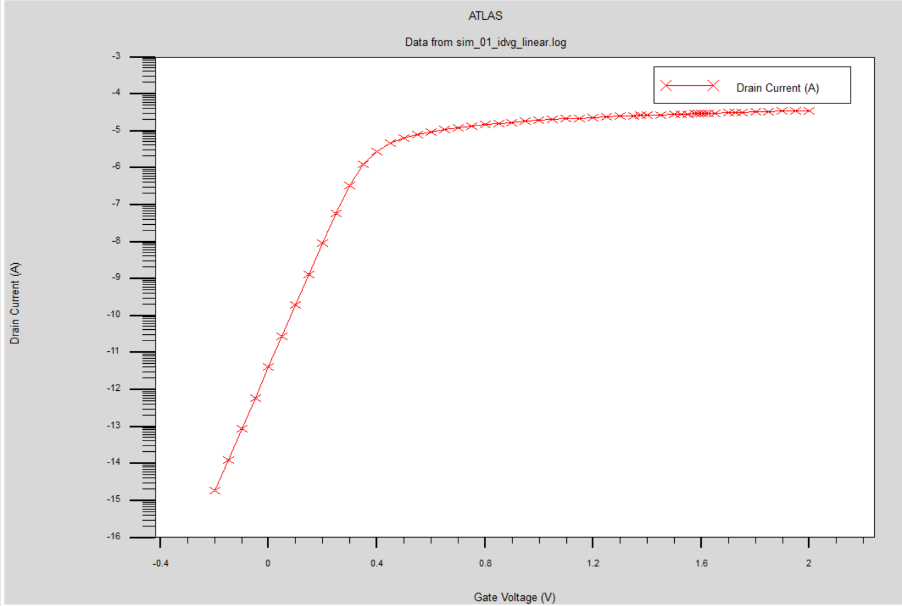
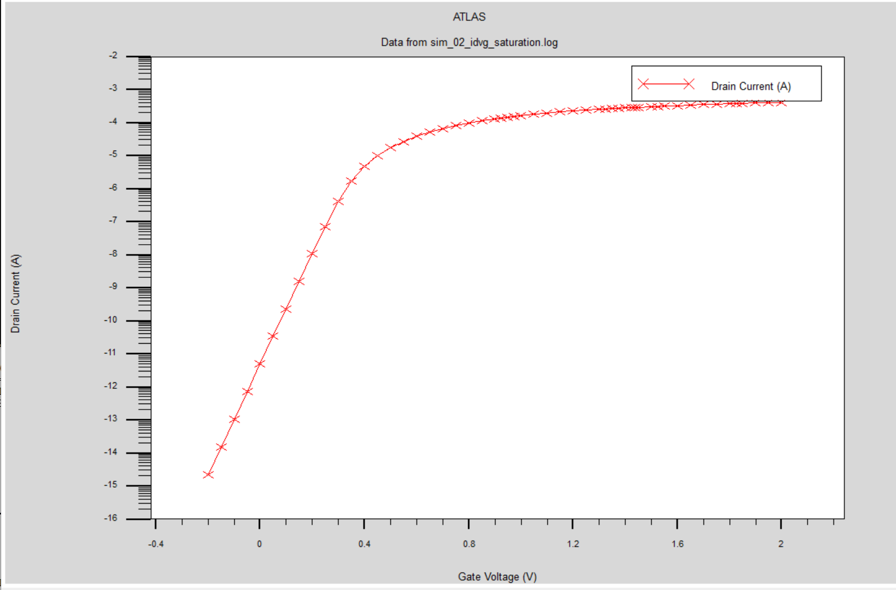
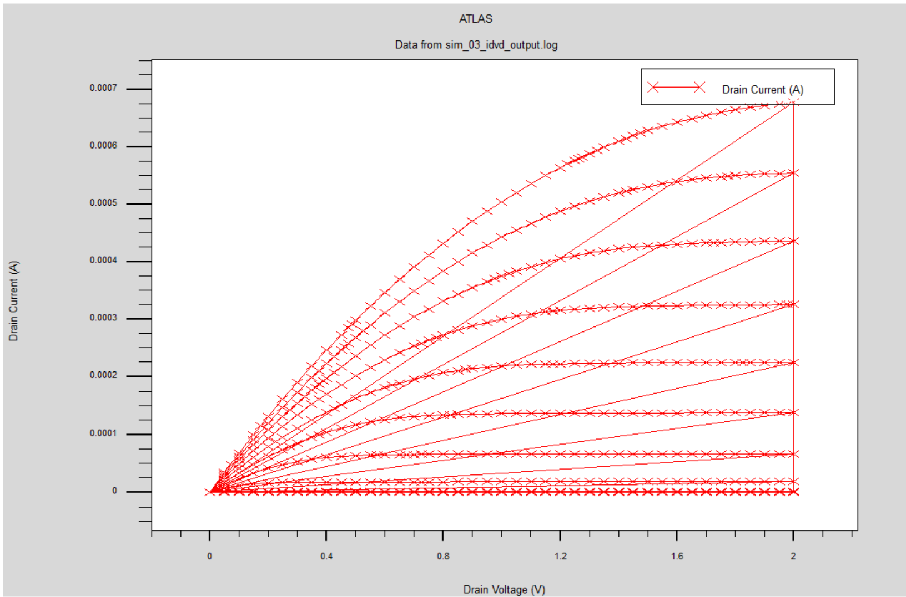

MBCFET Structure Modeling & Physics
A TCAD-driven device study of the Multi-Bridge-Channel FET (MBCFET) — Samsung's Gate-All-Around (GAA) evolution of the nanosheet transistor — aimed at understanding the geometric parameters that control the $I_{on}/I_{off}$ ratio and short-channel immunity at sub-5 nm logic nodes.
| Type | Device-level TCAD study |
| Toolchain | Silvaco TCAD (Athena for process, Atlas for device characterization) |
| Target Node | Sub-5 nm logic nodes |
| Key Focus | Short-channel effects (SCE) · DIBL · subthreshold slope (SS) |
Why MBCFET?
As CMOS technology scales down past the sub-5 nm node, the traditional 3D FinFET architecture loses electrostatic control of its channel due to severe short-channel effects (SCE). Gate-All-Around (GAA) architectures, such as stacked nanosheets, restore gate control by completely wrapping the gate oxide and metal gate electrode around the channel. The Multi-Bridge-Channel FET (MBCFET) stacks multiple wide, flat nanosheet channels in parallel. This configuration dramatically increases the effective channel width ($W_{eff}$) within the same footprint, leading to higher drive currents ($I_{on}$) while maintaining low subthreshold leakage ($I_{off}$).
However, the MBCFET design space is highly sensitive to nanometer-scale variations. Parameters such as nanosheet thickness ($T_{ns}$), sheet vertical pitch, gate length ($L_g$), and inner spacer material density must be optimized together to suppress Drain-Induced Barrier Lowering (DIBL) and subthreshold slope degradation.
TCAD Simulation Methodology
This study uses a two-phase Silvaco TCAD workflow to model the fabrication process and evaluate electrical characteristics. The process flow defines the layer structures, and the device solver simulates carrier transport and electrostatic behavior.
1. Device Structure Modeling
The 3D model of the stacked Gate-All-Around (GAA) Multi-Bridge-Channel FET (MBCFET) is defined with alternating epitaxial Si/SiGe superlattice definitions. The sacrificial SiGe layers are selectively etched to release three suspended silicon nanosheets, followed by high-k gate dielectric ($HfO_2$) deposition and metal gate fill to wrap completely around the channels.


2. Transfer & Saturation Characteristics
Numerical solutions of the quantum-corrected drift-diffusion transport equation evaluate short-channel immunity. Density-gradient quantum models account for carrier confinement and peak concentration shift away from the oxide interfaces. Lombardi CVT mobility models compute field-dependent and surface-roughness scattering. Below are the transfer characteristics plotted under linear and saturation drain biases.


3. Subthreshold & Output Characteristics
Simulated output family curves ($I_d-V_d$) at varying gate biases show current saturation and suppression of short-channel effects. The subthreshold logarithmic transfer curve demonstrates gate-all-around volume inversion and electrostatic shielding barrier control.
.png)

4. Extracted Subthreshold Parameters & Analysis
Instead of displaying raw Silvaco log outputs, the key electrical metrics extracted under linear drain bias ($V_{ds}=0.05\text{ V}$) using Constant Current (CC) and threshold-current methods are summarized and analyzed below:
| Extracted Parameter | Simulated Value | Physical Extraction Method & Analysis |
|---|---|---|
| Threshold Voltage ($V_{th}$) | $0.291\text{ V}$ | Extracted at a constant drain current criterion of $I_d = 10^{-7}\text{ A}$ from the $I_d-V_g$ curve. This demonstrates a well-controlled turn-on voltage suitable for low-power sub-1V logic. |
| ON-State Current ($I_{on}$) | $7.60\times 10^{-3}\text{ A}$ | Extracted at the maximum gate sweep bias of $V_g = 0.75\text{ V}$. Shows excellent current drive capability driven by parallel conduction across the three stacked nanosheet channels. |
| OFF-State Leakage Current ($I_{off}$) | $2.08\times 10^{-12}\text{ A}$ | Extracted at the standby gate bias of $V_g = 0.0\text{ V}$. Highlights the near-complete electrostatic closure and leakage suppression of the Gate-All-Around gate oxide. |
| Current Ratio ($I_{on}/I_{off}$) | $3.65\times 10^9$ | Computed directly from the extracted values. The ratio of nearly 9 orders of magnitude indicates extremely high switching efficiency, making this design highly suited for energy-efficient logic circuits. |
Geometric Parameter Analysis & Results
Our sweeps show that the nanosheet thickness ($T_{ns}$) is the single most critical parameter in suppressing short-channel effects. When $T_{ns}$ increases beyond 7 nm, subthreshold leakage spikes due to loss of volume inversion in the center of the sheet. Below is the summarized electrical telemetry comparing FinFET and MBCFET architectures at a scaled 12 nm gate length.
| Electrical Parameter | Scaled 3D FinFET | 3-Stacked MBCFET | Target / Improvement |
|---|---|---|---|
| Gate Length ($L_g$) | 12 nm | 12 nm | Reference scaled node |
| Subthreshold Swing (SS) | 76 mV/decade | 64 mV/decade | < 65 mV/dec (near-ideal subthreshold slope) |
| DIBL | 68 mV/V | 35 mV/V | -48.5% (excellent electrostatic control) |
| $I_{on}$ Drive Current | 1.15 mA/µm | 1.68 mA/µm | +46% (wider effective channel width) |
| $I_{off}$ Leakage Current | 4.5 nA/µm | 0.12 nA/µm | -97.3% (suppressed stand-by leakage) |
| $I_{on}/I_{off}$ Ratio | $2.56 \times 10^5$ | $1.40 \times 10^7$ | ~2 orders of magnitude improvement |
Significance
Successfully predicting electrostatic limits using calibrated TCAD process flows reduces the need for expensive physical trial wafers. This study maps out a robust geometric envelope (with sheet thickness kept between 4–6 nm and vertical spacing at 8–10 nm) where MBCFET devices can scale to the 3 nm or 2 nm nodes without running into thermal or gate-leakage limits. These findings form the basis for creating compact BSIM-GAA models for next-generation logic block simulations.